Каталог товаров

Фара для ВАЗ-2101
Цена: 1500 сум.

Задний фонарь ГАЗ-24
Цена: 1800 сум.

Руль для Москвич-2140
Цена: 2200 сум.
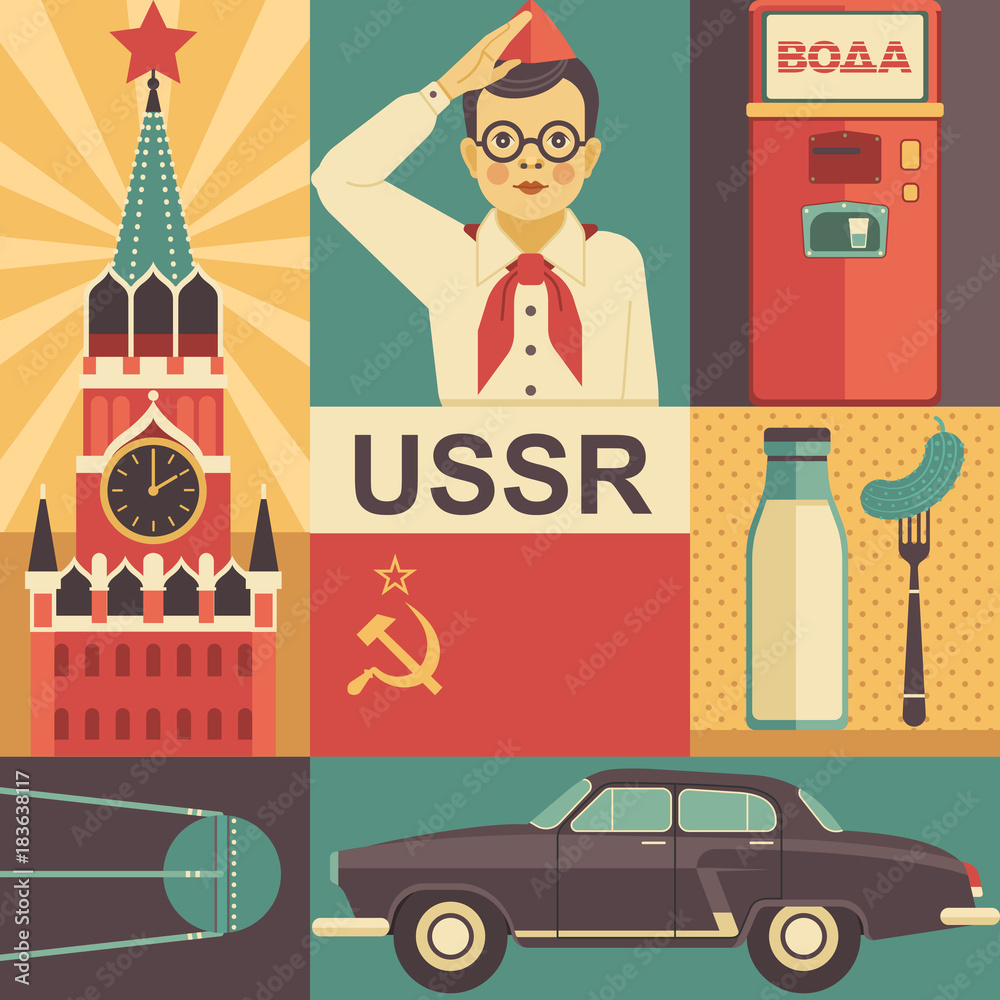
Го́рьковский автомоби́льный заво́д (сокращённо ГАЗ) — советское и российское крупное автомобилестроительное предприятие, расположенное в Нижнем Новгороде (с 1932 по 1990 год назывался Горьким).
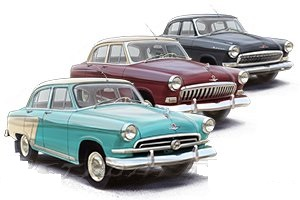
ГАЗ-М-21 «Во́лга» — советский легковой автомобиль, серийно производившийся на Горьковском автомобильном заводе с 1956 по 1970 год. Представляет собой четвёртое поколение, является «преемником» модели ГАЗ-М-20 «Победа». Производство ГАЗ-21 на самом ГАЗе продолжалось до 15 июля 1970 года, но ещё долгое время после этого сборка по сути новых автомобилей продолжалась на авторемонтных заводах, встречаются «ремзаводовские» машины выпуска вплоть до второй половины 1970-х годов. Заводской индекс модели — изначально был М-21, позднее (с 1965 года) — ГАЗ-21.
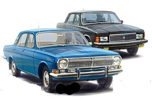
ГАЗ-24 «Во́лга» — советский автомобиль бизнес-класса, серийно производившийся на Горьковском автомобильном заводе с 1968[5][6] по 1986 год. Модель пришла на смену модели ГАЗ-21 «Волга», фактически став последним принципиально новым отечественным автомобилем данного класса ГАЗ, кузов которого послужил основой для модернизированной и рестайлинговой модели 3102 и паллиативных 31029/3110: ввиду непоявления современного для 1990—2000 годов кузова ― ГАЗ-3103.
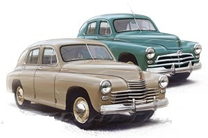
ГАЗ М-20 «Побе́да» — советский легковой автомобиль среднего класса, серийно производившийся на Горьковском автомобильном заводе (ГАЗ) в 1946—1958 годах, и в Польше в 1951—1973 годах. Заводской индекс модели — М-20. Легковой автомобиль представляет собой третье поколение легковых машин ГАЗ и является преемником модели М-1. 28 июня 1946 года начался серийный выпуск автомобилей «Победа». Всего до 31 мая 1958 года было выпущено 241 497 машин, включая 14 222 кабриолетов и 37 492 такси.
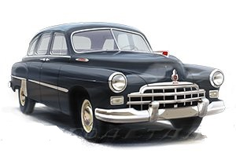
ЗИМ (до 1957 года), ГАЗ-12 — шестиместный и шестиоконный длинный седан большого и представительского класса, серийно производившийся на Горьковском автомобильном заводе (Завод имени Молотова) с 1949 по 1959 год (некоторые модификации — по 1960 год). «ЗИМ» — первая представительская модель Горьковского автозавода и последняя массовая модель данного (большого) класса, которая не была ограничена в своём применении[5]. ГАЗ-12 использовался для службы в таксомоторных парках и в качестве служебного автомобиля, предназначенного для партийной и правительственной номенклатуры среднего, но не высшего (им полагался автомобиль ЗИС-101 или ЗИС-110) уровня. В отдельных случаях продавался и в личное пользование. Всего с 1949 по 1959 год было выпущено 21 527 экземпляров ЗИМ / ГАЗ-12 всех модификаций. В 1959 году на смену пришла модель «Чайка» ГАЗ-13.
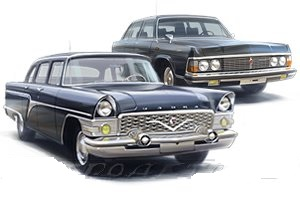
ГАЗ-13 «Ча́йка» — советский представительский легковой автомобиль большого и представительского класса, выпускавшийся малой серией на Горьковском автомобильном заводе с 1959 по 1981 год. Сменил модель поколения «ЗИМ» ГАЗ-12. Начиная с этой модели данный (большой) класс автомобилей становится привилегированным: прекращается их массовое изготовление и они не допускаются для использования кем-либо, кроме руководителей определённого уровня, советских послов (дипломатов) и иностранных граждан. В связи с этим ограничивается и палитра возможных цветов окрашивания кузовов. В 1977 году на смену пришла модель следующего поколения — «Чайка» ГАЗ-14.
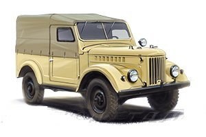
ГАЗ-69 и ГАЗ-69А — советские автомобили повышенной проходимости. ГАЗ-69 и его модификации производились с 1952 года по 1973 год
«АвтоВАЗ» — советская и российская автомобилестроительная компания. Крупнейший производитель легковых автомобилей в Восточной Европе. Завод основан в 1966 году в городе Тольятти, где находятся штаб-квартира и основное производство. Входит в перечень системообразующих организаций России.
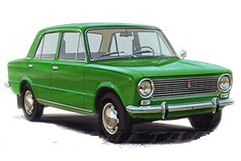
ВАЗ-2101 «Жигули» — советский заднеприводный легковой автомобиль малого класса с кузовом типа седан. Первая модель, выпущенная Волжским автомобильным заводом. На базе ВАЗ-2101 было создано так называемое «классическое» семейство автомобилей ВАЗ, которое находилось на конвейере до 17 сентября 2012 года.
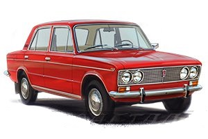
ВАЗ-2103 «Жигули» — советский заднеприводный автомобиль II группы малого класса с кузовом седан. Был разработан совместно с итальянской фирмой Fiat на базе модели Fiat 124 и серийно выпускался на Волжском автомобильном заводе с 1972 по 1984 год. Преемником «Тройки» в иерархии моделей Волжского автозавода считался ВАЗ-2107.
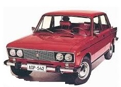
ВАЗ-2106 «Жигули» — советский и российский заднеприводный автомобиль III группы малого класса с кузовом типа седан, являющийся модернизацией ВАЗ-2103 и выпускавшийся Волжским автомобильным заводом с 1976 по 2001 год. В 1998 году производство было частично перенесено на предприятие «Рослада» в Сызрани (последний из выпущенных в Тольятти ВАЗ-2106 был собран 28 декабря 2001), в 2001 году — на Анто-Рус в Херсоне (Украина), а в 2000 году — на завод «ИжАвто» в Ижевске, где и продолжалось вплоть до снятия модели с конвейера в 2006 году. Один из самых массовых и популярных автомобилей в истории СССР, России и СНГ — всего произведено и собрано на разных заводах свыше 4,3 млн штук.
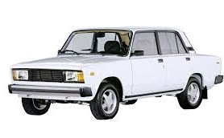
ВАЗ-2107 «Жигули» (LADA 2107) — советский и российский заднеприводный автомобиль II группы малого класса, с кузовом типа седан. На момент своего дебюта в иерархии моделей Волжского автозавода считался преемником ВАЗ-2103[2]. Является одним из последних представителей «вазовской классики», выпускался на ОАО «Волжский автомобильный завод/АвтоВАЗ» с 11 марта 1982 года по 17 апреля 2012 года[3].
ПАО «Запорожский автомобилестроительный завод» (ПАО «ЗАЗ») (укр. ПАТ «Запорізький автомобілебудівний завод» (ПАТ «ЗАЗ»), ранее «Автомобильный завод „Коммунар“») — советское и украинское предприятие, производящее легковые автомобили, а также фургоны и автобусы. Является головным заводом корпорации «УкрАВТО».
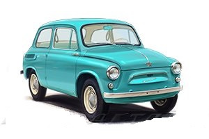
ЗАЗ-965 — советский микролитражный автомобиль, выпускавшийся с 1960 по 1963 год. 965А — модификация с двигателем мощностью 27 л. с., а позднее 30 л.с., выпускавшаяся с ноября 1962 по 1969 год. Всего было выпущено 322 166 автомобилей всех модификаций.
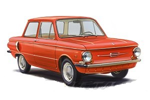
«Запоро́жец» (укр. «Запорожець»; экспортные обозначения для стран Западной Европы — Yalta/Jalta (Ялта), Eliette и ZAZ (ЗАЗ)) — марка советских и украинских заднемоторных легковых автомобилей особо малого класса, выпускавшихся заводом «Коммунар» в городе Запорожье (позднее — Запорожский автомобильный завод, в 1960—1994 годах входивший в производственное объединение «АвтоЗАЗ»).
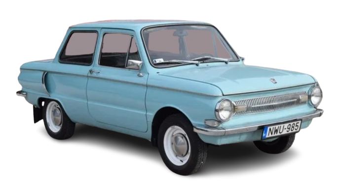
ЗАЗ-968 был эволюционным развитием модели ЗАЗ-966. Производился с 1970 по 1979 год. Первые экземпляры мало чем отличались от 966-й модели, более того – несколько лет они выпускались параллельно. Из внешних особенностей – наличие фонарей заднего хода и новая приборная панель. В конце 1973 года автомобиль был модернизирован и получил иное оформление передка (узкий молдинг вместо псевдо-решётки радиатора), обновленную светотехнику. При дальнейшем производстве в конструкцию ЗАЗ-968 постепенно вносились изменения и улучшения, такие, как фары типа «европейский луч» и другие.
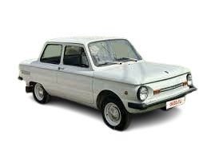
ЗАЗ-968М отличался от предшественников куда более существенно. ЗАЗ-968М намного меньше хромированных деталей.
«Ульяновский завод имени И. В. Сталина», аббревиатуры УльЗИС, УАЗ, UAZ — предприятие в Ульяновске, основано в июле 1941 года, входит в состав автомобильного холдинга «Соллерс» (бывший «Северсталь-авто»).
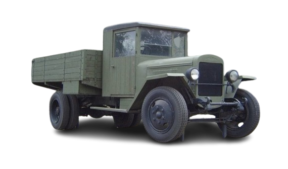
ЗИС-5 («трёхтонка») — советский среднетоннажный грузовой автомобиль грузоподъёмностью 3 т; второй по массовости грузовик 1930-40-х годов, один из основных транспортных автомобилей Красной армии во время Великой Отечественной войны.
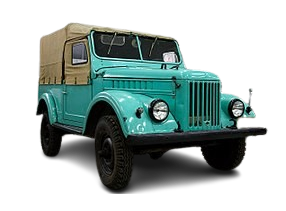
Автомобиль создан коллективом конструкторов Горьковского автомобильного завода на замену модели ГАЗ-67Б. Разработки автомобиля начались в 1946 году, опытные образцы изготавливались с 1948 года. Первые опытные образцы носили название «Труженик». Серийный выпуск начат 25 августа 1953 года. Выпускался на ГАЗе до 1956 года, позже производство было полностью передано в Ульяновск — на бывший УльЗИС, в войну собиравший грузовики ЗИС-5В, а в конце 1940-х — полуторку ГАЗ-ММ-В. С началом производства ГАЗ-69 предприятие было переименовано в Ульяновский автомобильный завод (УАЗ).
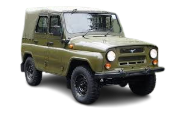
Основной командирский автомобиль в Советской армии, а также в странах Варшавского договора, начиная с середины 1970-х годов, сменивший в этом качестве предшественника ГАЗ-69. Серийный выпуск моделей УАЗ-469 и УАЗ-469Б начат в декабре 1972 года, до этого начиная с 1964 года было произведено несколько опытно-промышленных серий.
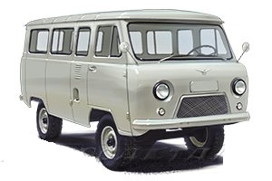
УАЗ-450 («Буханка») — советский малотоннажный развозной автомобиль, серийно производившийся на Ульяновском автомобильном заводе с 1958 по 1965 год. УАЗ-450 — первая самостоятельная серийная модель автозавода. Создан на узлах и агрегатах ГАЗ-69, но с двигателем увеличенного рабочего объёма. К 1965 году, когда начался выпуск нового семейства автомобилей — УАЗ-452, из ворот завода вышло 55319 автомобилей УАЗ-450 различных модификаций.
В 1929 году комиссия, командированная ВСНХ СССР в США для выбора американских автопроизводителей, чтобы наладить в СССР массовое производство автомобилей, заключила с фирмой Ford Motor Company соглашение о технической помощи по организации и восстановлению в СССР производства легковых и грузовых автомобилей марки «Ford». Производство решили развернуть в Нижнем Новгороде. В период с 1929 по 1932 годы сооружался основной автомобильный завод (будущий ГАЗ). В то время было принято решение об организации отвёрточной сборки автомобилей марки «Ford» моделей A и АА из американских комплектующих на автосборочной площадке в Москве. Завод был построен в 1929—1930 годах при участии компании Ford на пересечении Московской окружной железной дороги и Остаповского шоссе (современный Волгоградский проспект).
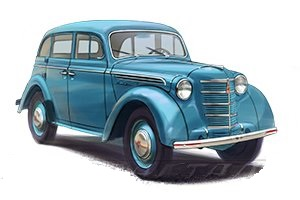
В 1947 году начался серийный выпуск легковых автомобилей «Москвич-400». Эта модель была разработана на основе немецкого «Opel Kadett» образца 1938 года и выпускалась частично на трофейном оборудовании[7]. В 1948 году началось производство полудеревянного фургона, а в 1949 — и кабриолета на базе «Москвич-400». В 1954 году увидел свет модернизированный автомобиль «Москвич-401».
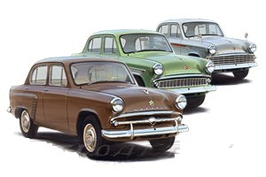
В 1956 году начат выпуск нового «Москвича-402», а уже в июле 1958 года была проведена его модернизация, в ходе которой он получил верхнеклапанный двигатель, собранный на основе расточенного старого блока, но с полностью новой алюминиевой головкой цилиндров. Новая версия получила индекс «Москвич-407». На этих автомобилях в 1958 году заводская команда дебютировала на международных спортивных трассах. Помимо базовых седанов серийно выпускались модификации с кузовами «универсал» (впервые в стране) и «фургон», а также — полноприводная версия «Москвич-410».
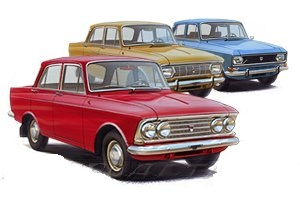
В мае 1967 года с конвейера сошёл миллионный автомобиль марки «Москвич», им стал «Москвич-408». В 1966 году во время визита Шарля де Голля в Советский Союз (20 июня — 1 июля) было подписано соглашение между автопроизводителями «Renault» и «Москвич»[8]. Тогда же вышло правительственное постановление о реконструкции МЗМА, которая началась в 1968 году. В ходе неё были введены в строй полностью новые производственные ветки конвейеров, работающие по технологии, лицензированной фирмой «Renault» и построенные с участием её специалистов. Параллельно был введён в строй и завод в Ижевске, также использовавший технологии «Renault». Оба завода были рассчитаны на выпуск до 200 тысяч машин в год каждый.
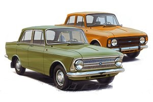
В 1974 году с главного конвейера завода сошёл двухмиллионный автомобиль «Москвич», он был модели «Москвич-412». Тем временем полоса «свободы творчества» для дизайнеров завершилась с приходом на завод команды управленцев с ЗИЛа осенью того же 1976 года. С учётом отсутствия на заводе новых и готовых к производству моделей новые руководители попробовали найти готовую иностранную модель с отработанной технологией по аналогии с «ВАЗ». В частности, рассматривались такие варианты, как будущий Citroën BX и автомобиль, впоследствии выпускавшийся под обозначением Fiat Tipo. Поиски эти не увенчались успехом. К тому моменту (1976 год) на заводе были готовы машины серии «С-1» (один показательный образец и не менее двух рабочих «мулов» для испытаний и краш-тестов), дизайн которых считался ещё не готовым к производству. Была создана более спокойная в экстерьере версия «С-3», которую некоторые считали предсерийной, однако этот автомобиль был также признан неудачным.
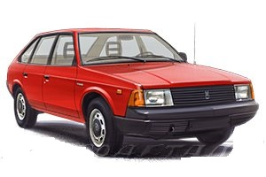
В начале 1990-х годов АЗЛК всё ещё оставался одним из крупнейших автомобилестроительных советских предприятий. На нём велись конструкторско-экспериментальные работы по созданию автомобилей и строительство нового моторостроительного завода. В краткосрочной перспективе готовился к серийному производству седан «Москвич-2142»
В 1949 году на базе «Рижского авторемонтного завода № 2» (РАРЗ № 2), который располагался в бывших мастерских Деицманиса и Потреки на улице Тербатас, был создан «Рижский завод автобусных кузовов» (РЗАК). Задачей завода было производство средних автобусов. В 1951 году РЗАК был объединён с «Рижской экспериментальной автомобильной фабрикой».
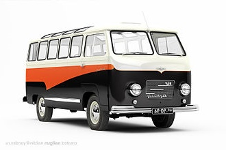
В 1957 году сотрудники РАФ познакомились с микроавтобусами Фольксваген и решили организовать производство микроавтобусов в Риге. Главный инженер Лаймонис Клеге (латыш. Laimonis Klege), конструкторы Я. Оситис (латыш. J. Osītis), Г. Силс (латыш. G. Sils) и ещё 4 энтузиаста в инициативном порядке создали первый микроавтобус РАФ-10. В честь VI Всемирного фестиваля молодёжи и студентов в Москве, РАФ-10 получил имя «Фестиваль» (латыш. «Festivāls»). РАФ-10 был построен на платформе легкового автомобиля ГАЗ-М20 «Победа», имел вагонную компоновку, стальной несущий кузов и 10 посадочных мест (отсюда индекс модели).
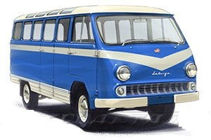
Опыт, накопленный при разработке и доводке РАФ-10 и РАФ-08, реализовался в модели РАФ-977 «Латвия» (латыш. «Latvija»), построенной на шасси легкового автомобиля ГАЗ-21 «Волга». В 1958 году выпущены первые 10 экземпляров, с 1959 года развёрнуто полномасштабное серийное производство. В 1960 году машины первого поколения были сменены модернизированными РАФ-977В.
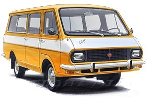
В 1976 году в городе Елгава под Ригой был введён в строй новый завод, рассчитанный на производство 17 тысяч автомобилей в год. Здесь началось производство 11-местных микроавтобусов РАФ-2203 «Латвия» на агрегатах ГАЗ-24 «Волга».
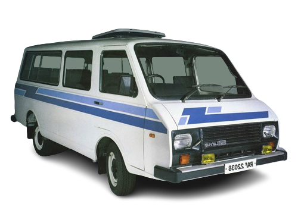
В духе реформ Перестройки, в 1987 году назначению нового директора предшествовали его выборы коллективом завода из списка предложенных кандидатов. В выборах победил Виктор Боссерт. Боссерт занимал должность директора РАФ до 1990 года. В конце 1980-х годов были проведены работы по модернизации морально устаревшей серии, при этом два опытных образца РАФ-22038-30 успешно прошли заводские испытания.
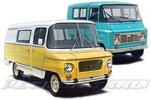
Nysa (Ныса, Ниса) — марка польских микроавтобусов на базе легкового автомобиля «Варшава». Выпуск начался в 1957 году на бывшей фабрике мебели в городе Ныса, юго-западе Польской Народной Республики. Żuk (Жук) — марка польских лёгких грузовых автомобилей. В 1956 году на Люблинском заводе грузовых автомобилей (Fabryka Samochodów Ciężarowych) началась разработка легкого развозного автомобиля «Жук». В 1959 началось производство цельнометаллического пикапа «Жук А0З» с колёсной базой 2700 мм и грузоподъёмностью 900 кг, оснащённого двигателем М20
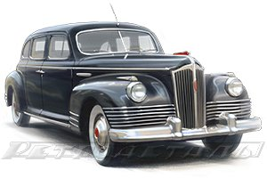
ЗИС-110 — советский легковой автомобиль высшего и представительского класса Завода имени Сталина, первый послевоенный автомобиль автопрома СССР. ЗИС-110 сменил на конвейере ЗИС-101. Производство началось в 1945 году и закончилось в 1958 году, когда его, в свою очередь, заменил ЗИЛ-111. 26 июня 1956 года завод по приказу Н. С. Хрущёва в рамках борьбы с культом личности Сталина получает имя И. А. Лихачёва — и автомобиль переименовывается в ЗИЛ-110, а с 1958 года данный класс автомобилей становится привилегированным: прекращается их массовое изготовление и они не допускаются для использования кем-либо, кроме лиц из высшего руководства страны. Таким образом, модель «110» является последней массовой серийной моделью данного класса, которая не была ограничена в своём применении и была доступна для граждан, вне зависимости от занимаемой ими должности. Всего выпущено 2089 экземпляров всех модификаций.
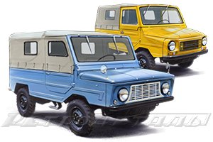
ЛуАЗ-969 «Волынь» — семейство советских грузопассажирских микролитражных легковых автомобилей повышенной проходимости, выпускавшееся на Луцком автозаводе в общей сложности с 1966 года по 2002 год. ЛуАЗ-969 представляет собой первое поколение гражданских легковых автомобилей повышенной проходимости (АПП) Луцкого автомобильного завода.
Цена: 1500 сум.
Цена: 1800 сум.
Цена: 2200 сум.
Мы предлагаем широкий выбор запчастей для советских автомобилей, начиная от ВАЗ, ГАЗ и заканчивая Москвич. У нас вы найдете уникальные детали, которые трудно найти в других местах. Мы гарантируем качество и оригинальность каждой детали.
Email: info@retrodetali.uz
Телефон: +0000000000
Адрес: ул. Пушкина, д. 10, г. Cамарканд